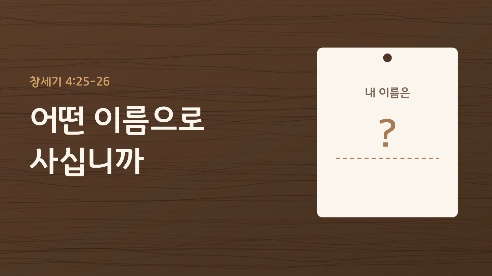

2026.10.18 주일 설교 묵상
어떤 이름으로 사십니까
세상이 붙여 준 이름이 아니라, 하나님이 주신 이름으로 사는 법을 하루씩 배우는 일주일
주일 설교 요약
본문: 창세기 4:25-26 (개역개정) · 설교자: 황성현 목사
하와는 첫아들을 낳고 "내가 얻었다"고 했지만, 셋을 낳고는 "하나님이 주셨다"고 고백했습니다. 셋은 아들에게 '약한 사람'이라는 뜻의 에노스라는 이름을 지어 주었고, 약함을 인정한 그 집안에서 사람들이 비로소 여호와의 이름을 불렀습니다. 가인의 사람들은 성에 자기 이름을 새겼지만, 셋의 사람들은 하나님의 이름을 불렀습니다. 세상이 붙여 준 이름은 언젠가 떨어져 나가지만, 하나님이 주신 '하나님의 자녀'라는 이름은 떨어지지 않습니다. 이제 우리 말의 주어를 '내가'에서 '하나님이'로 바꾸어 살아갑시다.
하와는 첫아들을 낳고 "내가 얻었다"고 했지만, 셋을 낳고는 "하나님이 주셨다"고 고백했습니다. 셋은 아들에게 '약한 사람'이라는 뜻의 에노스라는 이름을 지어 주었고, 약함을 인정한 그 집안에서 사람들이 비로소 여호와의 이름을 불렀습니다. 가인의 사람들은 성에 자기 이름을 새겼지만, 셋의 사람들은 하나님의 이름을 불렀습니다. 세상이 붙여 준 이름은 언젠가 떨어져 나가지만, 하나님이 주신 '하나님의 자녀'라는 이름은 떨어지지 않습니다. 이제 우리 말의 주어를 '내가'에서 '하나님이'로 바꾸어 살아갑시다.
주일 설교 슬라이드
1 / 43

좌우 화살표를 눌러 슬라이드를 넘겨보세요.
매일 이렇게 새로워지세요
- 받은 것으로 세기: 내가 가진 것을 "내가 얻었다"가 아니라 "하나님이 주셨다"로 고백합니다.
- 약함을 솔직하게: "괜찮아요"로 덮지 않고, 약한 부분을 하나님께 솔직하게 말씀드립니다.
- 말의 주어 바꾸기: "내가 했다" 대신 "하나님이 도와주셔서"라고 말해 봅니다.
- 주님의 이름으로: 직함이나 형편이 아니라 하나님의 자녀라는 이름으로 하루를 삽니다.
요일별 묵상 여정
월요일
제목
성경구절